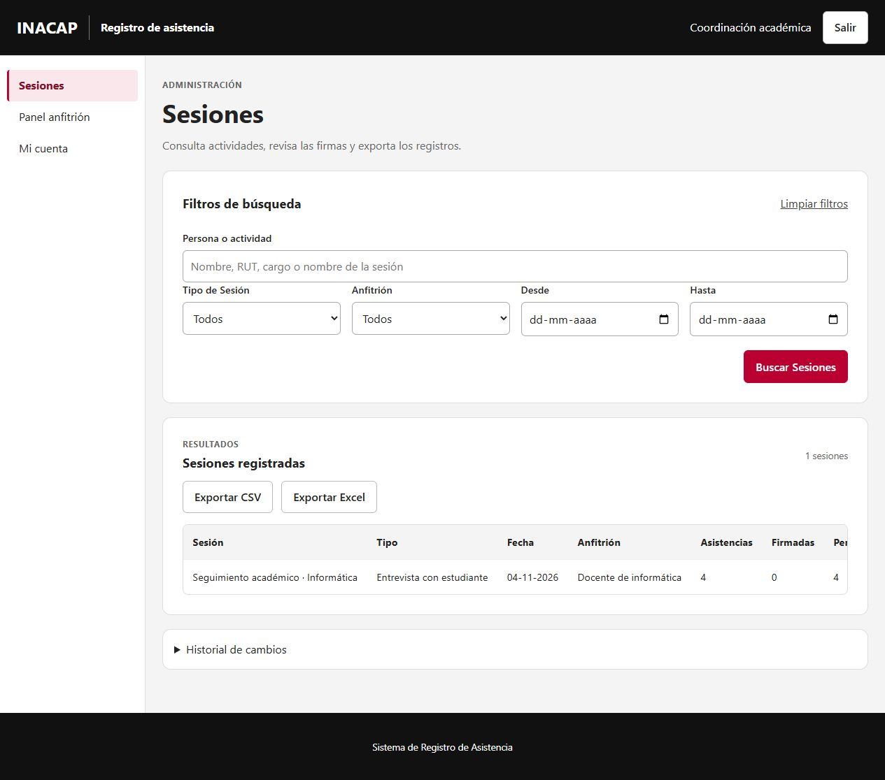
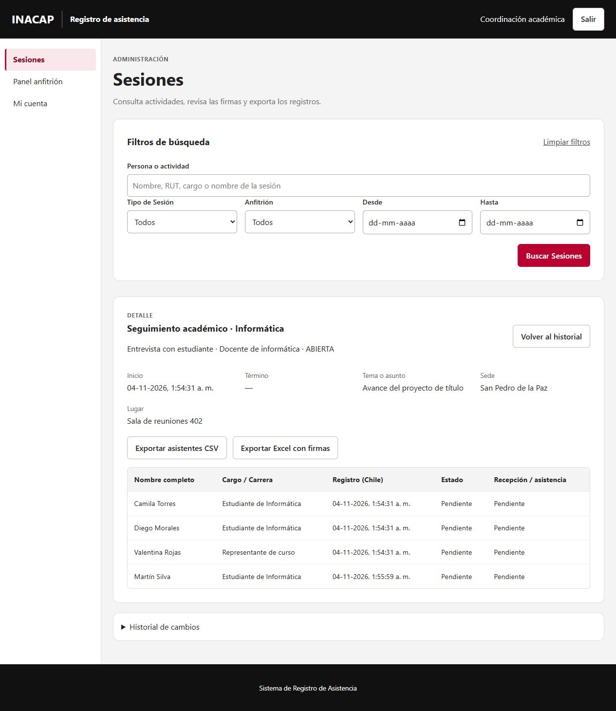
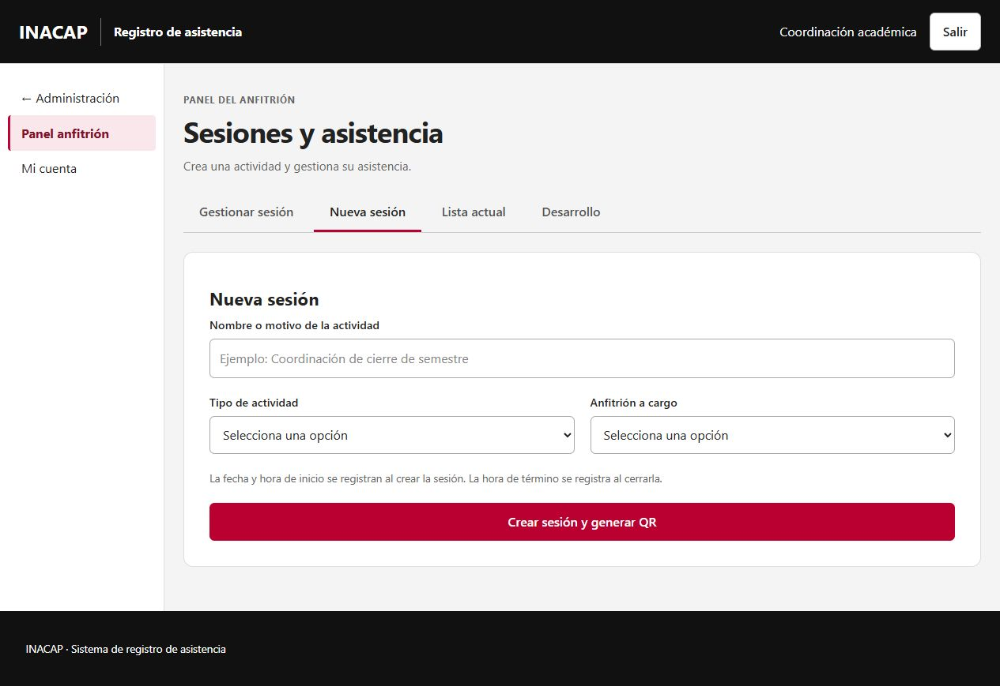
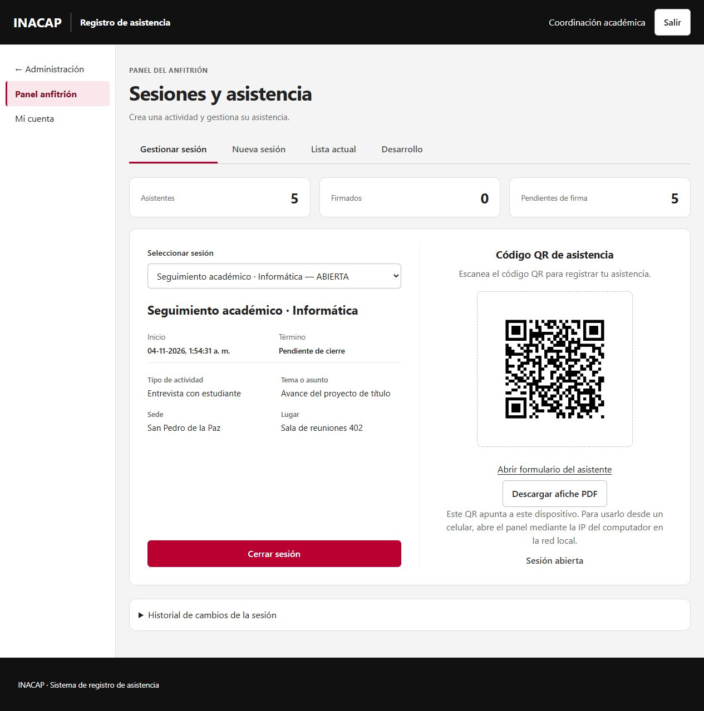
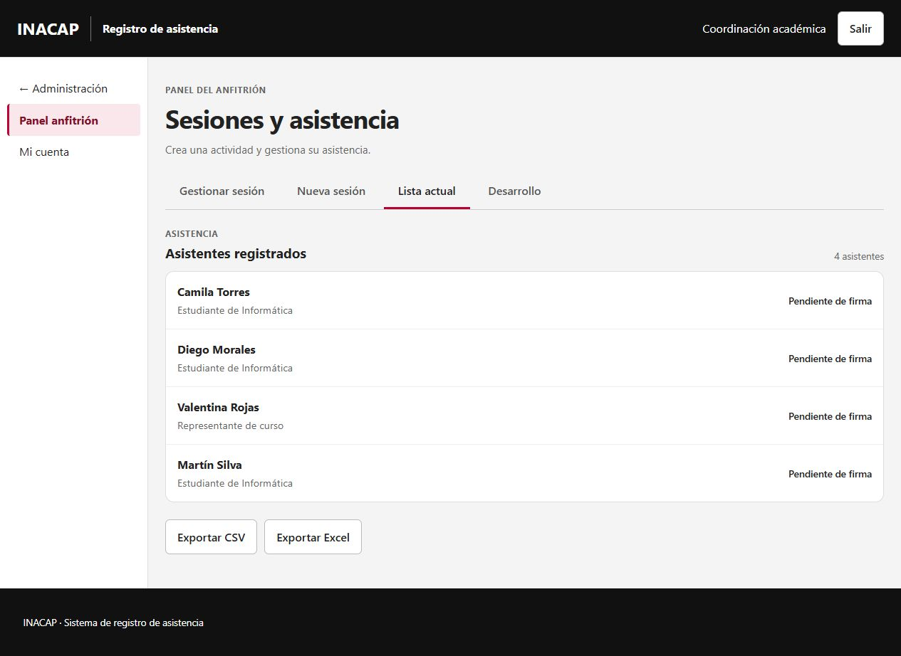
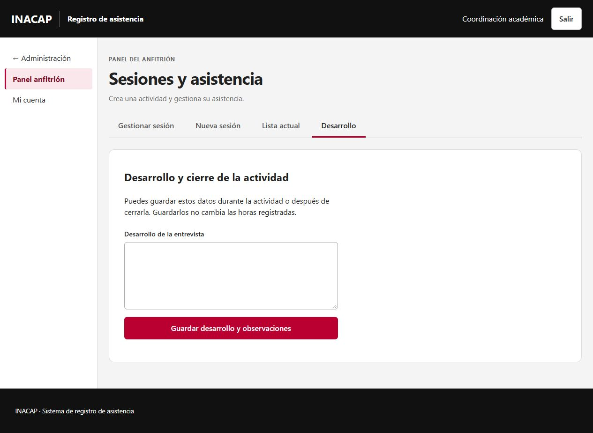
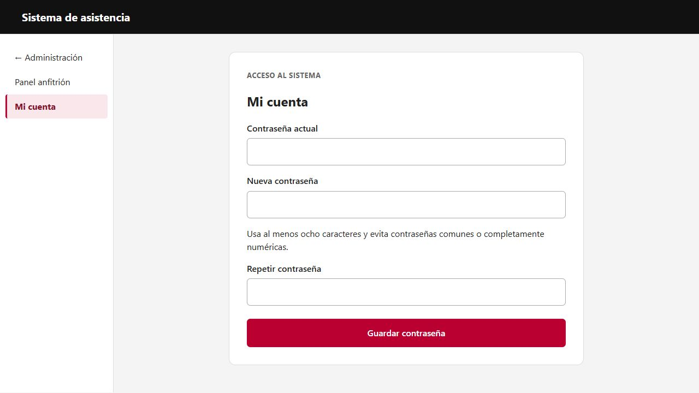
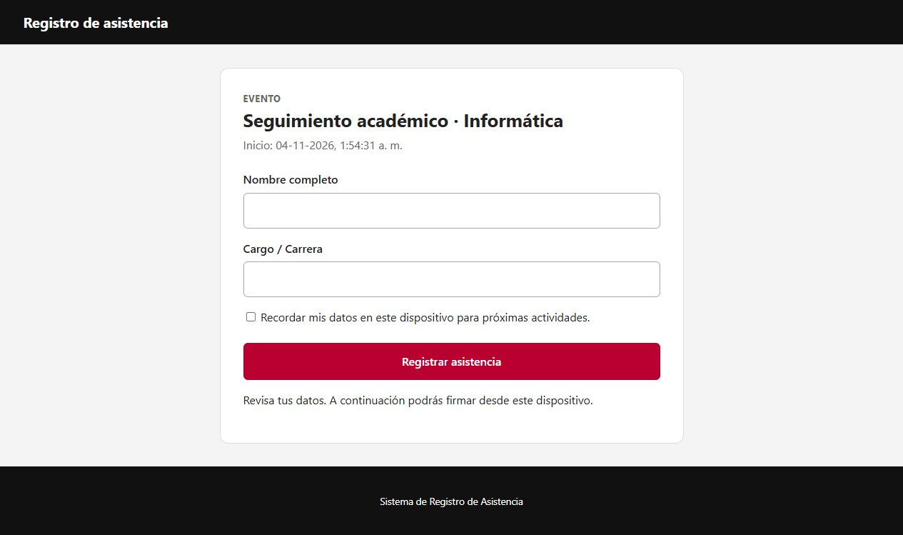
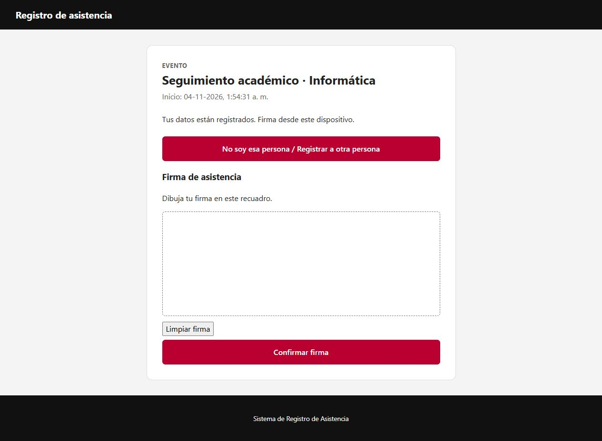

Pantallas del sprint actual
Capturas del sistema Django con datos ficticios.
Administración
Historial de sesiones y filtros · Descargar imagen
Detalle de asistentes y exportación · Descargar imagen
Panel anfitrión
Nueva sesión · Descargar imagen
Gestión de sesión, QR y afiche PDF · Descargar imagen
Lista actual y estado de firma · Descargar imagen
Campos de desarrollo de la actividad · Descargar imagen
Mi cuenta
Navegación lateral y regreso al panel · Descargar imagen
Asistente
Formulario abierto desde el QR · Descargar imagen
Área de firma en el dispositivo del asistente · Descargar imagen